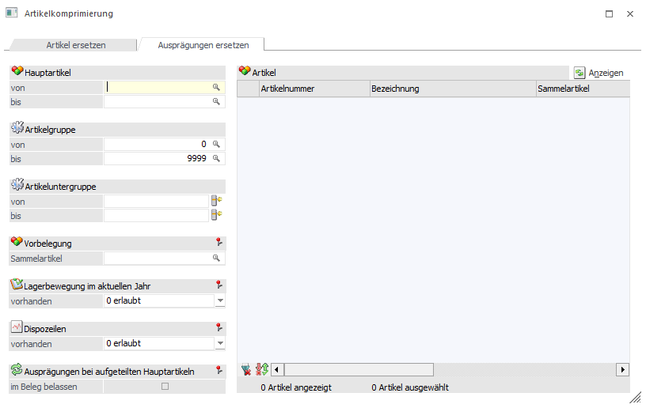
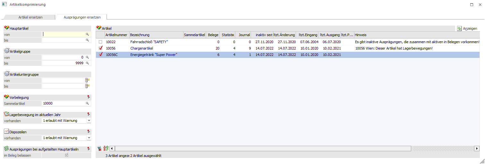
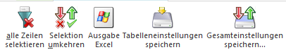
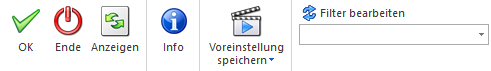
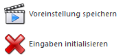

Im zweiten Register der Artikelkomprimierung werden Hauptartikel angezeigt, die selbst aktiv sind, die aber inaktive Ausprägungen enthalten.
ü Welche das sind, wird beim Aufruf der Artikelinfo über das Kontextmenü im Reiter "Ausprägungen" angezeigt. Auch bei der Beleginfo im Artikelinfo werden nur die Belege mit inaktiven Ausprägungen angezeigt.
ü Beim Datum wird das Datum der zuletzt verwendeten Ausprägung angezeigt.
ü Die Option "Ausprägungen behalten" steht hier nicht zur Verfügung.

Hinweis
Ausprägungen können nicht komprimiert werden, wenn es Belege gibt, in denen aufgeteilte Ausprägungen vorhanden sind, die sowohl aktiv als auch inaktiv sind. Grund: Da die Ausprägungszeilen gelöscht werden, könnte es zu Problemen kommen, wenn es Teillieferscheine mit aktiven Ausprägungen gibt, da diese bei der Umstellung nicht gefunden werden und dann ggf. auf eine Auftragszeile verweisen, die nicht mehr vorhanden ist.
Lagerstände werden zusätzlich zur Umbuchung auf den Sammelartikel vom Hauptartikel abgebucht. Dasselbe gilt für die Eröffnungsbuchung des Hauptartikels.

Tabellenbuttons

Ø alle Zeilen selektieren
Mit Hilfe dieses Buttons werden alle Zeilen aktiviert.
Ø Selektion umkehren
Durch Anwählen des Buttons "Selektion umkehren" werden aktivierte Zeilen deaktiviert und deaktivierte Zeilen aktiviert.
Ø Ausgabe Excel
Durch Anwahl des Buttons "Ausgabe Excel" wird der Inhalt der Tabelle an Microsoft Excel übergeben
Ø Tabelleneinstellungen speichern
Die Spalten einer Tabelle können grundsätzlich an beliebige Positionen verschoben, bzw. in der Breite entsprechend angepasst werden. Durch Anwahl des Buttons "Tabelleneinstellungen speichern" werden die Einstellungen benutzerspezifisch gespeichert und bei dem nächsten Aufruf des Programmpunktes wieder vorgeschlagen.
Ø Gesamteinstellungen speichern
Im Gegensatz zu "Tabelleneinstellungen speichern" können mit "Gesamteinstellungen speichern" mehrere Tabellenaufbauten gespeichert und nach Wunsch geladen werden. Zusätzlich werden Sonderfunktionen der Tabelle (z.B. "Spalte gruppieren") ebenfalls bei der Speicherung bedacht.
Buttons

Ø Ok
Mit einem Klick auf diesen Button wird die Artikelkomprimierung gestartet. Zuerst werden nochmals die entsprechenden Prüfungen durchgeführt.
Ø Ende
Die Anzeige, die Info und die Umstellung können mithilfe dieses Buttons abgebrochen werden. Bei der Umstellung ist der Abbruch aber erst beim nächsten Hauptartikel möglich.
Ø Anzeigen
Beim Betätigen des Anzeigen-Buttons werden alle selektierten Artikel angezeigt.
Ø Info
Über den Info-Button wird die Anzahl der Zeilen in der Beleg-, Statistik- und Artikeljournaltabelle summiert. Bei Belegen wird bei Hauptartikel mit Ausprägungen nur der Hauptartikel gezählt. D.h. falls Ausprägungen über die Autovervollständigung direkt eingegeben werden, werden sie nicht berücksichtigt.
Weiters wird geprüft, ob der Artikel überhaupt komprimiert werden kann bzw. ob der Sammelartikel verwendet werden kann. Wenn die Komprimierung nicht möglich ist, wird der Grund in der dann eingeblendeten Spalte "Hinweis" angezeigt.

Ø Voreinstellungen speichern/ Eingaben initialisieren
Durch Anwahl dieses Buttons erfolgt eine benutzerspezifische Speicherung aller im Fenster getätigten Einstellungen. Diese sogenannten "Voreinstellungen" können jederzeit wieder abgerufen werden und ermöglichen dadurch ein schnelleres und zielorientierteres Arbeiten.
Ø Filter bearbeiten
Über diesen Button kann ein bestehender Filter bearbeitet oder ein neuer Filter angelegt werden. Neben dem Button stehen in einer Auswahlbox alle definierten Filter zur Auswahl.